Your own files, a new engine
Beachhead ships engine code only. Levels, models, sounds and scripts load in place from your own legally owned installation. Nothing original is redistributed.
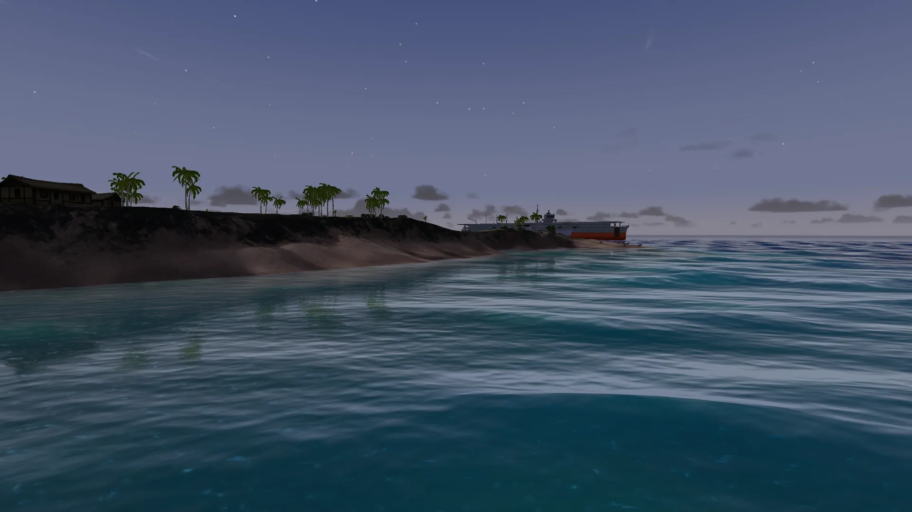
Open source · in development
The Refractor-era Battlefields, rebuilt from the ground up.
An open-source engine that plays your own copies of Battlefield 1942, Battlefield Vietnam, Battlefield 2 and Battlefield 2142. Perfectly preserved, carefully remastered.
What it is
Beachhead reads the games you already own, straight from your install, and plays it in a brand new engine. Same maps, same vehicles, same rules. Native ultrawide, modern renderer, and an engine that can finally grow.
Beachhead ships engine code only. Levels, models, sounds and scripts load in place from your own legally owned installation. Nothing original is redistributed.
Torque curves, wheel grip, wing lift, fall damage, the HUD and its animations: every rule is recovered from the original and written down before the new engine implements it.
Once an era plays like the original, a Modern ruleset layers on top: a simulated ocean, volumetric skies, dynamic weather from clear skies to torrential storms, destruction and the fidelity of today's shooters.
One engine, four eras
Beachhead covers all four Battlefield games built on the Refractor engine, expansions and booster packs included: two Refractor 1 eras in development today, two Refractor 2 eras next. Each keeps its own HUD, weapons and feel.
In development · Refractor 1
Battlefield 1942
With the expansions The Road to Rome and Secret Weapons of WWII. Wake Island leads the way.
In development · Refractor 1
Battlefield Vietnam
From Operation Irving's rivers to the helicopters.
Next · Refractor 2
Battlefield 2
With the Special Forces expansion and the Euro Force and Armored Fury booster packs. Commanders, squads and jets.
Next · Refractor 2
Battlefield 2142
With the Northern Strike booster pack. A new ice age, walkers, titans and the war after next.
Two ways to play every era
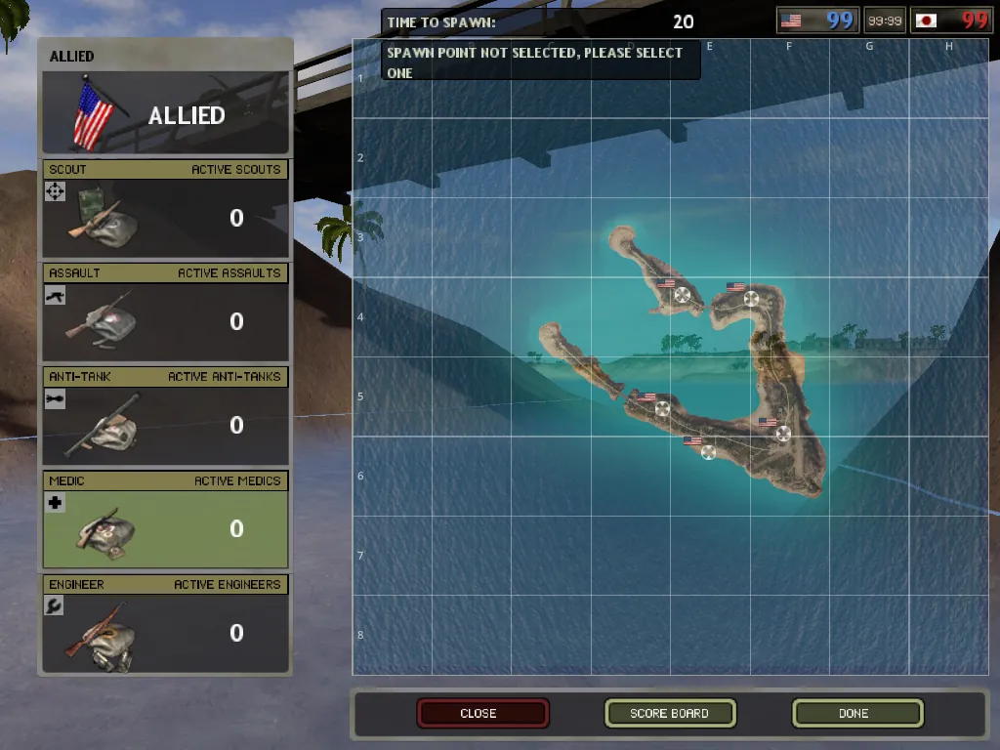
A preservation of the original, presentation and gameplay alike. The menus and HUD are the game's own menu files, run by a reimplementation of its interface runtime, animations included.
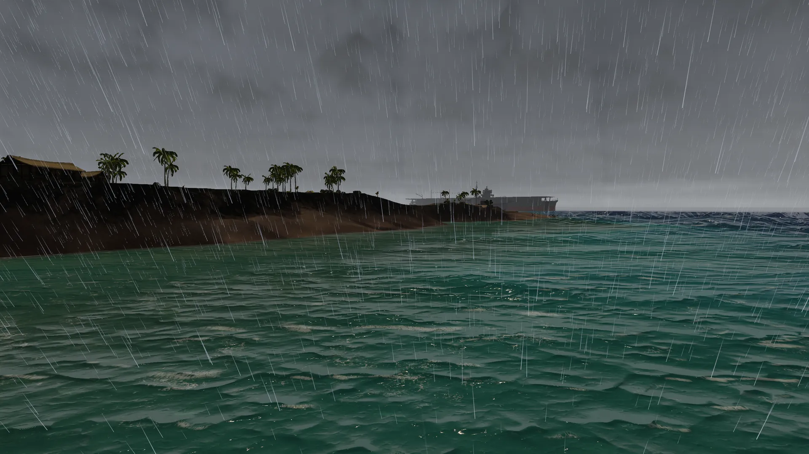
A new experience layered on each finished Classic, aiming at the fidelity of today's Battlefield. Servers pick the ruleset for the match.
Wake Island · one beach, one camera
A continuous day on a single clock: drag through it.
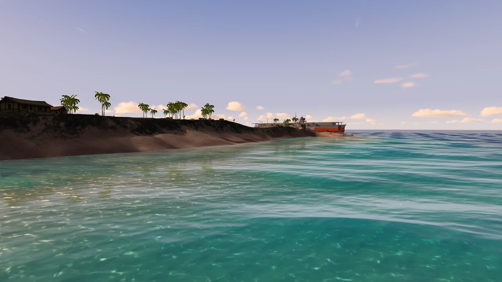
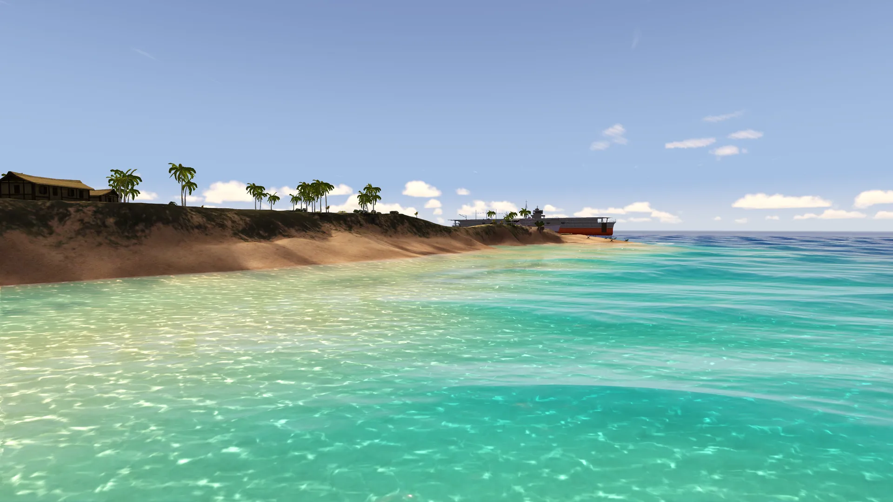
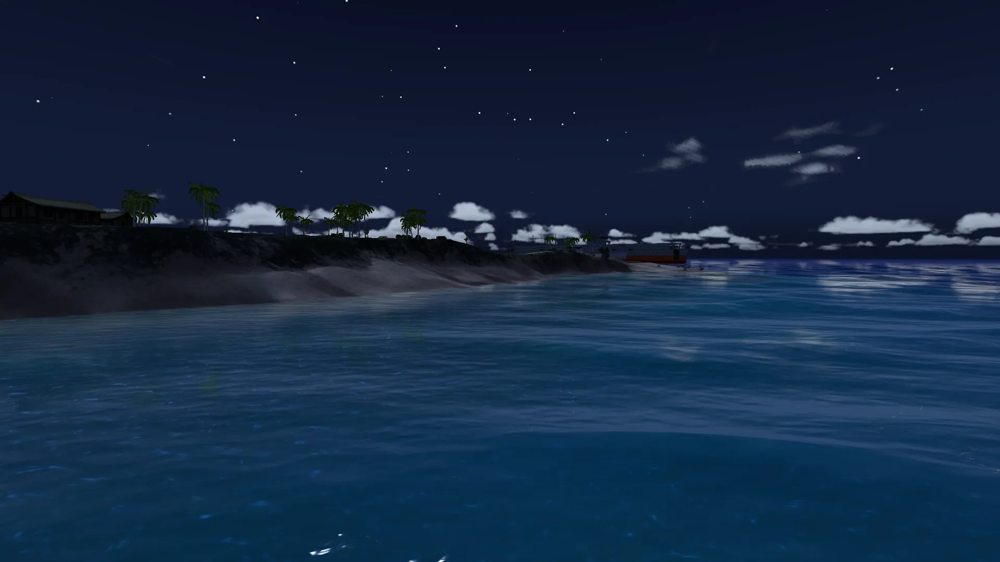
In-engine, today
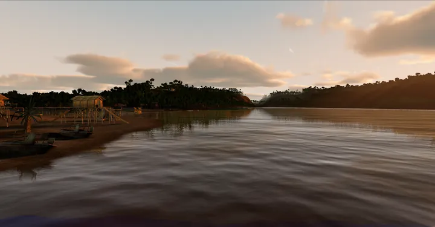
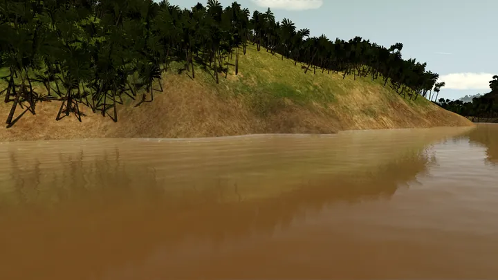
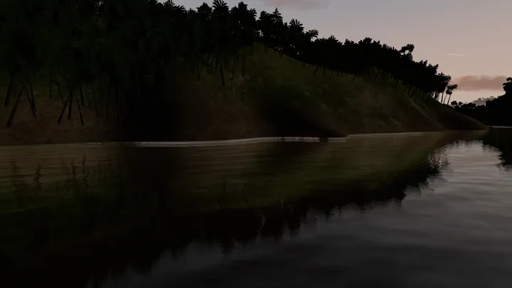
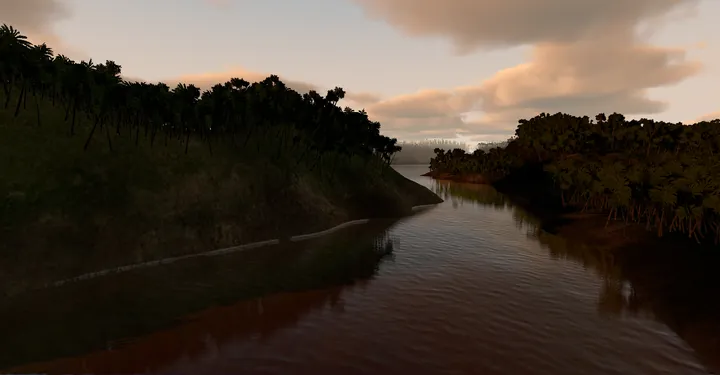
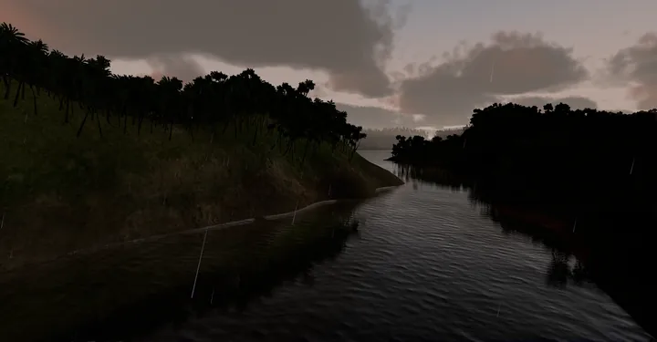
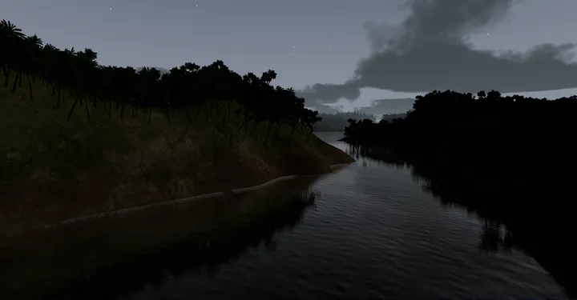
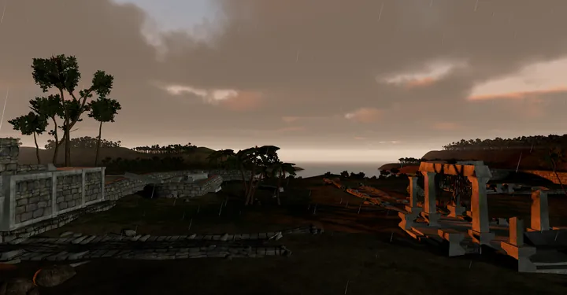
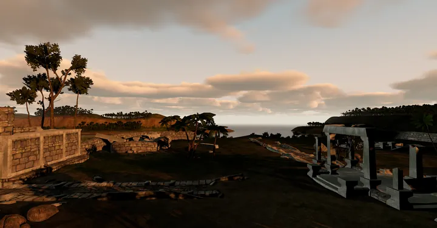
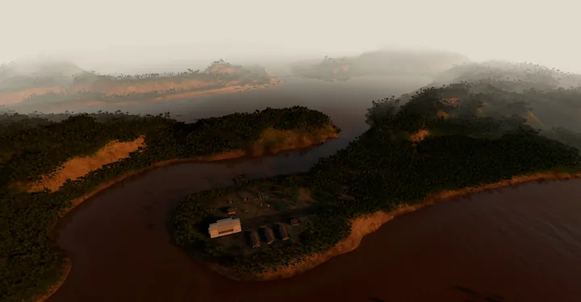
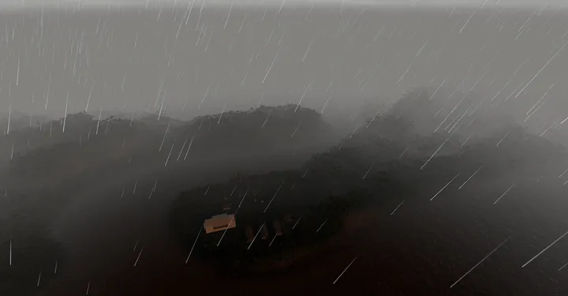
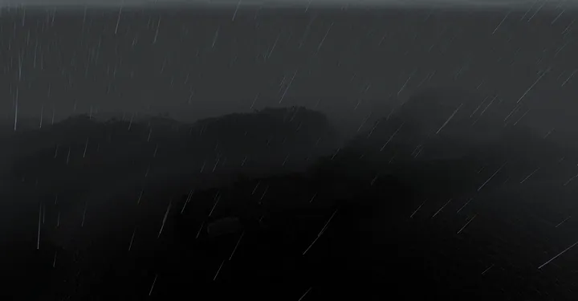
In-engine renders of content from the developer's own copies. Work in progress.
Under the hood
Engines and gears, springs, grip, wings, buoyancy, drag and propeller thrust, each traced to the original before it is written.
The game's own menu files run on a reimplemented interface runtime: spawn screen, HUD, minimap and their animations.
Engines, footsteps and landing gear play from the original sound scripts, placed in 3D, with surface-aware steps.
Original formats are importers into a general engine: bigger terrain, longer view distances, native ultrawide.
No concealment culling: full 3D trees to 2.5 km and screen-space-error terrain, so nobody hides behind draw distance.
A Godot editor plugin opens any level as an editable scene, with assets kept at their original paths.
Coming next
Built for players who remember running their own servers. Host from the game and friends join with a code, or run a dedicated box and it shows up for everyone.
The plan
Every era reaches its Classic before any new Modern work begins. One era at a time, one map first, then the full catalog.
Gameplay and presentation to near 1:1, checked against the original.
The full official catalog, The Road to Rome and Secret Weapons of WWII included.
Operation Irving already runs; Classic parity follows, then all maps.
One server for every era, LAN to internet.
Battlefield 2 and Battlefield 2142, with new importers for the second-generation engine's formats.
The Modern ruleset layered on each finished Classic.
Questions
Yes. Beachhead contains no original assets. You point it at your own legally owned installation of Battlefield 1942, Battlefield Vietnam, Battlefield 2 or Battlefield 2142 and it reads the content from there.
Beachhead is an open-source engine reimplementation, in the tradition of OpenMW and OpenRA. The license is still being decided.
There is no release date yet. Wake Island and Operation Irving are playable in development builds today.
Mod support is part of the plan. Beachhead keeps the original virtual paths, and its editor plugin opens levels as editable scenes for new maps and mods.
ZALIAS™, a Software & Audio Engineer who has experience modding the Refractor Engine Battlefield titles since 2005
No. Beachhead is independent and unofficial, and is not affiliated with, sponsored by or endorsed by Electronic Arts or DICE.